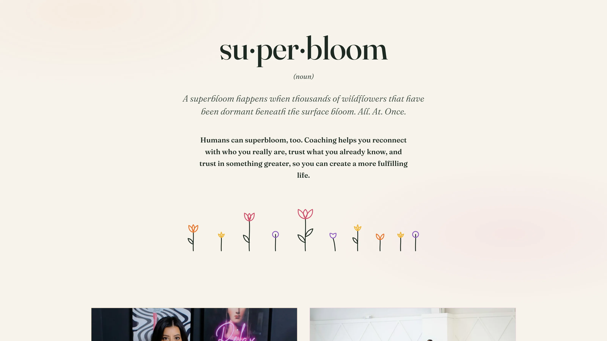
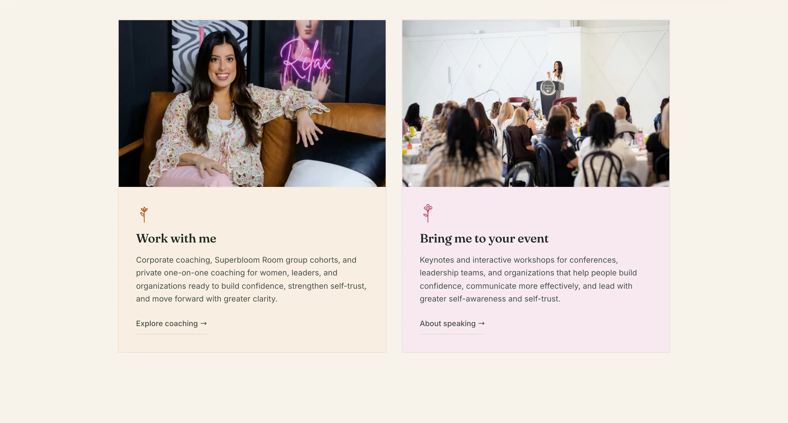

Superbloom by Alana
Alana Cummings · Rochester, New York
Design, copy, build, and self-service blog
Alana Cummings spent more than thirteen years building a corporate career before she started coaching. She was good at it, and quietly certain that something in her was still waiting. Her word for what happened next is superbloom, the rare desert event where seeds that lay dormant for years all flower at once when the rain finally comes.
Every one of these projects starts with the same question: why do you do what you do? Alana’s answer was already a metaphor, so the site takes her at her word. The homepage opens on a wall of flowers with her standing in front of it, under the headline she wrote herself: it’s time to bloom.

A superbloom is a real thing, so the site defines it the way a dictionary would. The word breaks into syllables, takes its part of speech, and reads out the meaning in her voice. Underneath it, a row of wildflowers draws itself up from the baseline as you arrive, stems first and then petals, so the page performs the idea instead of describing it.
The palette came out of her own logo. I sampled the pinks straight from the file and keyed the whole site to them, so nothing on the page fights the brand she already had. Every headline is hers, every testimonial is a real client in their own words, and the trusted-by row is only rooms she has actually stood in.

The rest of it runs her practice without needing me. She writes her own blog from a private page, publishes a post in about a minute, books paid one-session Clarity Calls, and collects her mailing list, all of it hers to run. We built the whole thing together over two weeks of her notes and my drafts, and it went live on her own domain a week before the deadline.
“Working with Eli was incredibly fun, easy, and deeply clarifying. He told me early in the process that creating your website will make you confront yourself deeply, and he was right.”
Alana Cummings, Superbloom by Alana